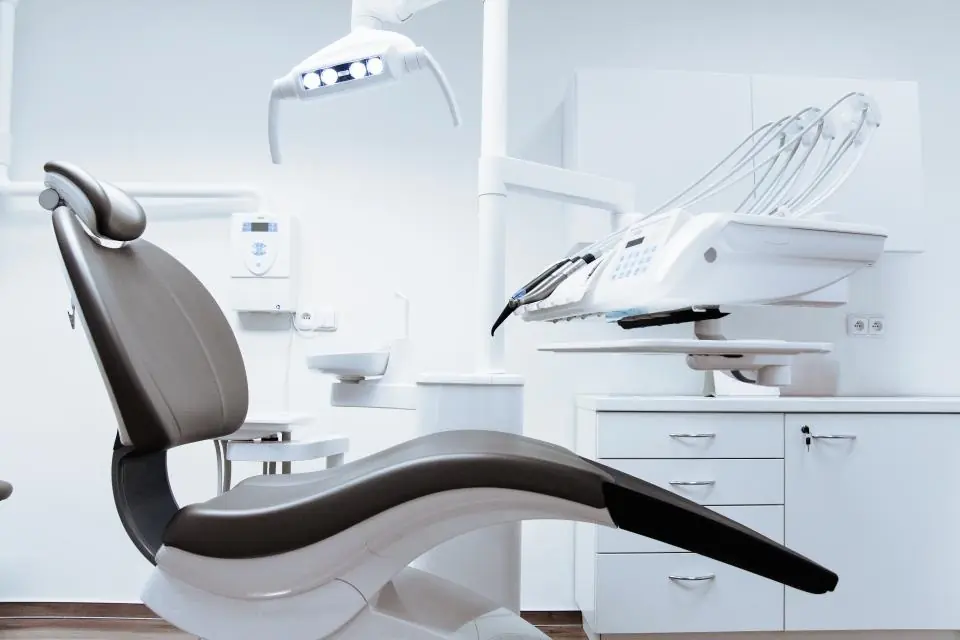
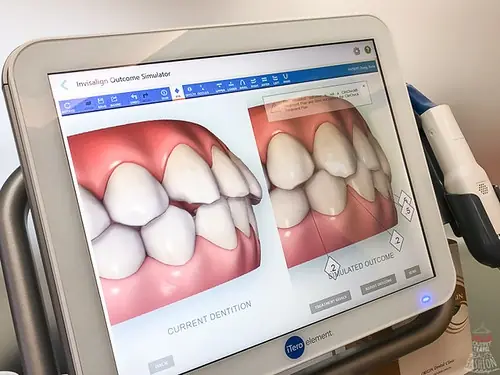
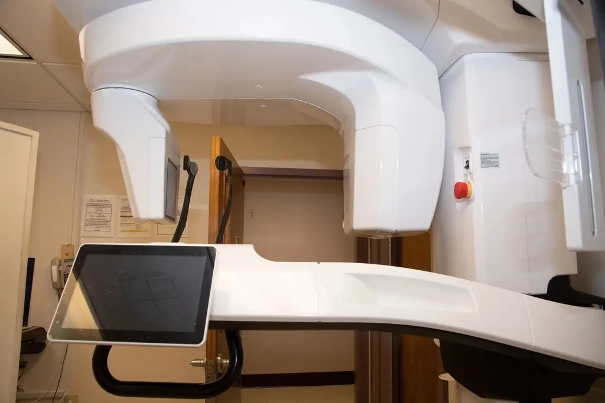
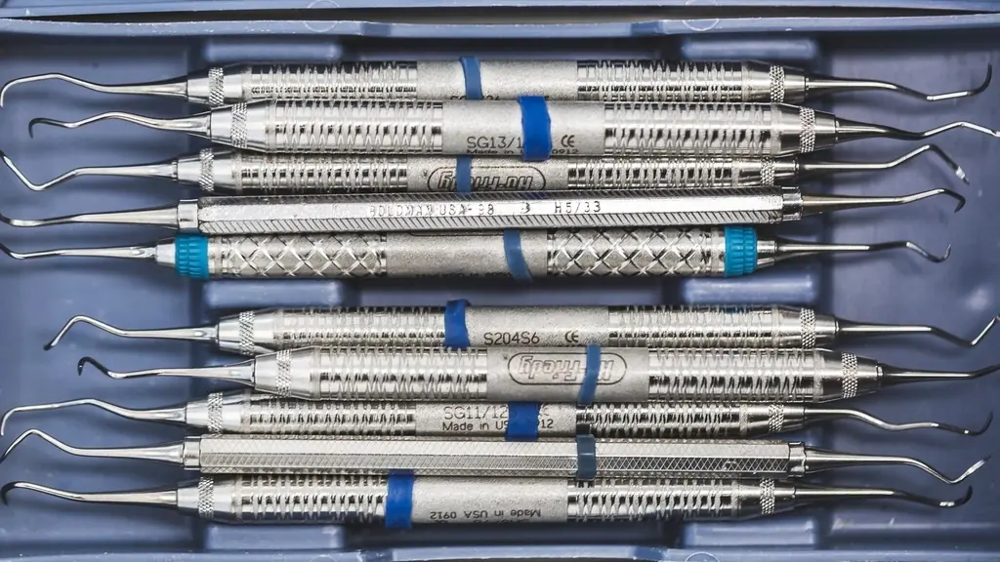

Implantodontia
Dra. Helena Varga
Responsável pelo planejamento cirúrgico guiado e pelas reabilitações com implante.
Projeto demonstrativoA Velune Odontologia é uma clínica fictícia. Marca, textos e site foram criados do zero pela Tirvo. As fotos vêm de bancos de imagem livres (créditos).
Conhecer a TirvoNa Velune, cada tratamento começa com escaneamento digital, plano por escrito e prazo combinado. Você entende o que será feito, quanto tempo leva e como fica o resultado antes de começar.

Aqui ninguém começa um tratamento sem diagnóstico, sem saber quanto tempo leva ou sem ver o resultado antes, em simulação.
Do check-up ao implante, cada tratamento é planejado pela equipe junta. Você recebe um plano com etapas, prazos e cuidados de cada fase.
Ver todos os tratamentosDente fixo no lugar do que foi perdido, planejado em tomografia e colocado com guia cirúrgico.
Conhecer o tratamentoPlacas transparentes ou aparelho fixo, com simulação 3D do resultado antes de começar.
Conhecer o tratamentoClareamento, lentes de contato dental e facetas desenhadas para o seu rosto.
Conhecer o tratamentoCheck-up, limpeza, restaurações e tratamento de canal com acompanhamento a cada seis meses.
Conhecer o tratamentoConsultas pensadas para crianças, com adaptação, prevenção e orientação para os pais.
Conhecer o tratamentoDiagnóstico e planejamento acontecem dentro da clínica. Menos deslocamento, menos consultas e mais precisão em cada etapa.

Moldagem digital em minutos, sem a massa que dá ânsia.
Precisão de 20 mícrons
Imagem 3D do osso para planejar implantes com segurança.
Laudo no mesmo diaTratamento de canal com ampliação de até 24 vezes.
Mais conservador
Cada kit tem registro do ciclo, que você pode conferir.
Rastreio por loteCada caso é fotografado com o mesmo padrão de luz e ângulo, antes e depois. Assim a comparação é honesta.
Pontualidade, retorno e conclusão de tratamentos são medidos todo mês.
Distribuição dos planos concluídos
Primeiras consultas em 2025
Atendimentos iniciados em até 10 minutos do horário marcado
Pacientes que voltam para a revisão de rotina
Tratamentos iniciados e terminados como planejado
Dados fictícios, criados para este projeto demonstrativo.
Casos que envolvem mais de uma área são discutidos em reunião clínica semanal. Você recebe um plano único, não três opiniões diferentes.
Conhecer a equipeResponsável pelo planejamento cirúrgico guiado e pelas reabilitações com implante.
Cuida dos casos de alinhadores e aparelho fixo, do escaneamento ao contenção.
Desenha sorrisos com lentes, facetas e clareamento a partir de fotos e vídeo.
Pelo WhatsApp ou telefone, com horário confirmado na hora.
2 minutosConversa, exame clínico, fotos e escaneamento 3D.
50 minutosEtapas, prazos e cuidados explicados com calma.
Em até 3 diasConsultas marcadas com antecedência, no seu ritmo.
Você decideProgramas de prevenção e check-up para colaboradores e suas famílias.
Empresas fictícias, criadas para este projeto demonstrativo.
Agende uma avaliação. Em 50 minutos você sai com fotos, escaneamento e uma conversa clara sobre o que precisa ou não ser feito.
Atendemos de segunda a sexta, das 8h às 20h, e aos sábados pela manhã.
Olá. Quer agendar uma avaliação? Temos horários nesta semana.